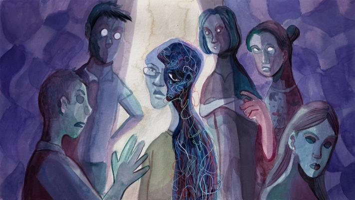

Life hit rock bottom for every single member of my family the day my mum took her own life. On 28 July 2018, my brother was diagnosed with delusion disorder. Since then, I had a hunch that my mother might one day take the path that she did. Nevertheless, I tried to brush this thought off as I believed that with my love and support, she would be able to accept and overcome the challenges of coping with my brother’s condition. It is hard to imagine when looking back how I got by the last few months. On hearing the news that day, it felt like I had a brain concussion – the shock, the disbelief, the pain! It was a traumatic experience having to identify her and sign the death certificate. Nothing made sense. She had been just lying next to me the night before, after I had given her a massage, and within hours, she was gone forever! A cold corpse lying in the mortuary for me to kiss her goodbye for the last time. It was agonising to see my frail dad heartbroken, and crying his heart out like I had never seen before. Even though I was devastated, I held back my tears in front of my dad to avoid upsetting him further and ignored my feelings to ensure the funeral arrangements were attended to. It was the last thing I could do for my mum – for us to bid our final farewell to her. If you think things must be difficult during the wake, I can tell you that it was even harder after the funeral. I had suddenly become the head of the household overnight, the pillar for everyone in the family to lean on and the one responsible for ensuring the family was well despite the tragedy. My immediate priority after the incident was the welfare of my dad and brother. My dad is getting on in age. As an ex-stroke patient, I was afraid the blow would be too much for him to take. He could neither sleep nor eat well ever since. He even refused to take his regular medication. I had to step in as I could not allow him to undergo any further mishap or stress that aggravates his health.
I was also worried about my brother’s condition, which seemed to have worsened with my mum’s sudden death. He became very distanced and quiet. His refusal to seek treatment to-date did not help to alleviate our stress levels. Relations were constantly strained at home as we experienced changes and adjusted to new family dynamics. It was hard to communicate with my brother when everyone’s emotions were running high. Our ignorance about his condition brought the tension to the next level. As I write, it has been almost six months since my mum’s passing. My heart stops whenever I recall the dreadful day. What I have learnt in that time is the importance of support. I would still be living like a zombie, completely dazed, if I had not been open to seeking help and speaking to others as part of my healing process. I realised that I could not handle everything by myself, and that my family needed a lot of support during this difficult period. In order to hold my family together, I reached out to as many resources as I could to tide us through. Although what I experienced was tremendously painful to deal with, I now accept that life goes on. Everyone has their own challenges to deal with in life. What matters most is how we cope with it, and the attitude we adopt to overcome our hurdles. My family has never regretted not being there for my mum as we constantly spent quality time with her. My mum will always be with us as we continue to hold on to the values she instilled in us. Her early departure just created an opportunity for us to build stronger bonds with my dad now. Being a traditional man, our relationship with dad had always been distanced as displays of open affection were just not my dad’s cup of tea. Since my mum’s demise, dad had made a huge effort to change himself and our relationship with him now is stronger than before. This makes caring for my brother a lot easier when the family is on the same line. Living in a society like Singapore, with our lifestyle getting more and more stressful, we should be proactive in taking care of our mental health. I recently heard that 1 in 7 Singaporeans will suffer from mental health issues. I wish that I had prior knowledge of mental health and the impact it has on people, so that I could have gotten early treatment for my brother and mum, and avoided this tragedy. My brother is at present finally seeking treatment, and I was surprised when the doctor shared he had been living with his condition for the past four years. I often wonder why I had not noticed it earlier. On the other hand, I am relieved that he is getting professional care now and I just need to be more patient on his road to recovery. Now that the family is aware of his condition and united in supporting him, I believe we are stronger and more resilient in the face of mental health obstacles. I want to encourage everyone to ask for help when necessary. In our Asian society, we care so much about face that sometimes we would rather suffer in silence than seek help. When it comes to crises like this involving my loved ones, I have learnt to become shameless. I do not care what others think about my situation. All I know is that I simply cannot risk losing a family member again. It is important to ditch the “losing face” mentality. Ditch the thoughts about how others might view you! Ditch the stigma around mental health conditions! Get proper support for yourself. As much as I love my family, I have also learnt to love myself more. As caregivers, self-care is important. You can only take good care of your loved ones when you are well. Weeks after my mum’s passing, I proceeded with a planned vacation as I needed to get away and recharge. I also made the decision to take a career break to focus on rebuilding myself first. I would not have had the courage to do so, especially in our society, without the support of my loving dad and sisters. It is important to realise what really matters in life, and I have come to be more positive by appreciating something good taking place each day. Simple things that can make my day are: a meal cooked by my dad, a colleague buying me a cup of kopi, receiving a sweet message to cheer me up, or even not having to wait very long for the bus. After all, we only live once, and I just feel fortunate to have this opportunity. It is good that the government is beginning to recognise the role caregivers play in the society these days. I hope that more can be done to fight against mental health stigma – for instance, I would like to see workplaces refrain from questioning applicants whether they have had past mental conditions during the selection process. This causes discrimination and stops people from seeking help.
COVID-19 was declared a global pandemic by the World Health Organisation on 11 March 2020.
The new coronavirus is an infectious respiratory illness that is transmitted from person to person like the regular flu, but with a relatively low fatality rate compared to SARS, MERS and H1N1. Not much is known about COVID-19 at this point, which understandably causes fear and distress especially for us who have anxiety related conditions. Amidst the panic-buying (a.k.a. toilet paper hoarding) and frequent handwashing, we think this is a good time to hit the pause button and remind ourselves that resilience and hope (even humour!) can be just as contagious. We can rise above the chaos. Here are seven practical suggestions to empower ourselves:
1. Write down what you can and cannot control. Fear and anxiety are natural responses to the unknown. Journal your thoughts and see what are the things you can change and what are those you can’t. For example, we can’t confront every person who doesn’t cover their mouths when they cough or sneeze, but we can walk away from them and keep a safe distance.
2. Do not skip your medical appointments. Consult your doctor to see if your appointments can be rearranged; whether it’s possible to meet less frequently, or if there are other ways to have your sessions without meeting physically. Another way to minimise exposure each time you visit the hospital or clinic is to align your medical appointments on one day if possible, or have them less frequently according to your doctor’s advice.
3. Ask if your medication can be delivered instead of collected in person. Hospitals and polyclinics under Singhealth offers this option. Some hospitals like Khoo Teck Puat hospital have a Medibox which functions like a parcel delivery locker that allows you to collect your medication refills at your own time, so you need not wait at the hospital pharmacy with the crowd.
4. Limit your exposure to media and yes, that includes muting family chat groups that spread well-meaning but also fear-mongering fake news. Get your information from reputable sources, be updated once or twice a day, and then fill the rest of your day with other meaningful activities.
5. There are many of us who feel the need to wash our hands frequently which can trigger anxiety-driven compulsions and obsessive behaviour. If possible, we could use this as an opportunity to practise personal self-care in a mindful, compassionate way. Take a warm shower at the end of each day before bedtime. Be present in the moment and gently massage your fingers, joints as you wash your hands. Keeping clean and hygienic doesn’t have to be a chore. Other ways of caring for ourselves include having a balanced diet, some exercise and adequate sleep. Participate in relaxing activities like deep breathing or hobbies like gardening to boost our immunity.
6. Social distancing does not mean social isolation. Reach out and check in regularly with people you care about. Make that phone call, or even video calls using Facetime and Skype. Or send a text or whatsapp. Be part of social media community groups. There are also groups that screen livestream events on Youtube and social media platforms. Gaming communities, Reddit are also other social ways of connecting with others. So even though we may all be keeping physical social distance, we can still connect with one another online in virtual spaces.
As persons with mental health conditions, we are familiar with the battles in our minds. There aren’t any easy solutions, but we are much stronger than we realise. We have already overcome so much in our lives, and likewise, we shall also get through this, one day at a time. Rooting for us all!
My story has nothing to do with physically attempting it, but rather stopping myself from following through suicide ideation.
Suicide ideation, also known as suicidal thoughts, refers to the process of thinking of planning to carry out suicide. It is not to be mistaken as attempted suicide, where the person follows through the plan.
During moments of dread, anxiety, depression and the myriad of negative emotions on a daily, constant basis, whenever it peaks, suicide ideation also peaks.
Suicide ideation isn’t something I’m proud to share, but speaking about it and coming to terms that it’s part of me, and has been with me since the trauma that caused it, does help me prepare for when it comes about.
My own experience stems from abandonment, physical and mental suffering through National Service. Having gone through a sudden break-up, and within months going through National Service, the toil on both my body and mind caused me to have frequent breakdowns. I was seen by a psychiatrist who told me that if I was lying about my condition, I would be thrown into Detention Barracks (army prison), which left me feeling threatened and traumatised.

I was 48kg heavy, 177cm tall when I entered the army for training. One would expect me to not be physically capable of keeping up with the rest when it comes to physical training, but the system is relentless. This persisted for about a year or so with less and less support from the people and organisations around me. This was when where suicide ideation began for me. Medication that reduces the aforementioned sufferings also robs me of any sense of purpose and fulfilment in going about daily routines of my life, and so through talks with my former psychiatrist, my prescription was removed. Everybody can imagine and empathise with the pain a person goes through when they encounter physical trauma, while nobody cares to realise that mental, emotional and psychological suffering also exists. People who suffer from mental, emotional and/or psychological trauma, and end up having suicidal ideation, tend to have suffered constantly for a prolonged period of time.
As such suffering can’t be determined through data and numbers, or physical anomalies, many people dismiss it when sufferers confide in their loved ones. Oftentimes, these moments tend to be brushed off, and I have had many moments of being ostracised, ridiculed for my weak mental state, and selfishly berated for choosing the ‘easy way out’. It is no different from kicking someone when they are down and out, and reinforces the idea that there isn’t anybody who is truly there to understand, or even try to. No proper, consistent support was given during those moments. People can understand brief moments of grief, loss, and pain; yet can’t tolerate when others are not able to pick themselves back up as quickly or as well as most. Even mental healthcare workers can easily get carried away with intolerances on their part when sufferers go to them for help. I know that from personal experience. Empty words do nothing to help, especially when action does not follow through.
Strong logic has been the boon and bane of my life. On one hand, it has helped me in many problem-solving situations, developing empathy towards others, and changing my perspectives of others who lead different lives from me. On another hand, this logic also reinforces the negative effects of trauma, society on the whole letting me down, and not having real support. If I cannot heal from my suffering, what better way than to remove myself from suffering any further by suicide, I frequently wonder. Suicide ideation has been a part of my life, and will always be until a constant and consistent structure of love and support is present. Every waking moment has a rough percentage tacked onto it. On good days, it feels 10%; on most days, it’s 20-30%. On rough days, it hits 70-80%. In moments that trigger mental breakdowns, it hits 110-140%. During such moments, I have to stop myself from moving in order to not proceed with stopping the pain permanently. This usually involves a lot of quiet crying, curling up like a ball for hours at end, and constant shaking. The aftereffects of these breakdowns persist for days at end, up to 3 weeks. Hobbies and interests take up most of my coping mechanisms. This resulted in rotating multiple hobbies – I dabble in video games, watching anime, building PCs, read up on technology on the whole, practice martial arts, learn street latin dances, build model kits, among others. These hobbies reduce my interaction with other people, or they provide some physical connection to substitute the love and support I need. And having this many hobbies takes away my desire for suicide. Having been single since the trauma that triggered it, and a really brief long distance relationship that ended up being cheated upon, I can only rely on luck to guide me to the love and support I need to gradually heal.
Illustrator: Xiao Yan